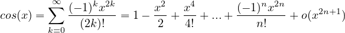
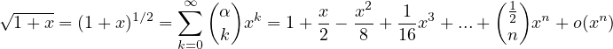
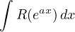

Foglio per esame scritto di Analisi 1
Niccoló Zanotti
5 dicembre 2024
Successioni in ℝ
Criterio. Del rapporto
Sia {an}una successione in ℝ+, ed esista limn→∞. Allora se
-
limn→∞ < 1, allora an → 0;
< 1, allora an → 0;
-
limn→∞ > 1, allora an → +∞;
> 1, allora an → +∞;
Criterio.
Siano α,β ∈ℝ+ e sia {an}una successione in ℝ. Allora se
Inoltre se
Criterio.
Sia {an}una successione in ℝ. Allora se
Criterio.
Sia {an}una successione in ℝ. Allora se
Criterio.
Sia {an}una successione in ℝ+. Allora se
Approssimazione di Stirling
Serie numeriche in ℝ
Serie notevole. Geometrica
Serie notevole. Armonica Generalizzata
Serie notevole. Di Abel o Armonica Generalizzata di tipo 2
Criterio. Del confronto
Siano ∑
ak e ∑
bk due serie a termini in ℝ+ tali che
Allora:
-
∑
bk convergente  ∑
ak convergente;
∑
ak convergente;
-
∑
ak divergente  ∑
bk divergente.
∑
bk divergente.
Criterio. Del confronto asintontico
Siano ∑
ak e ∑
bk due serie a termini in ℝ+. Allora se
Criterio. Della radice
Sia ∑
an una serie a termini in ℝ0+. Allora se esiste limn→∞ = λ
-
λ > 1 an convergente;
an convergente;
-
λ < 1 an divergente;
an divergente;
Criterio. Di Leibniz
Sia ∑
(-1)nan una serie a termini di segno alterno. Allora se
-
an+1 < an (an é definitivamente decrescente);
-
an → 0 (an é infinitesima);
la serie é convergente.
Criterio. Di condensazione(Cauchy)
Sia {an}una successione a termini in ℝ+.Allora se
-
an+1 < an (an é definitivamente decrescente);
-
an → 0 (an é infinitesima);
Criterio. Del rapporto
Sia ∑
an una serie a termini in ℝ+ tale che esista limn→∞ = λ. Allora se
= λ. Allora se
-
λ > 1 la serie non é convergente;
la serie non é convergente;
-
λ < 1 la serie é convergente.
la serie é convergente.
Criterio. Di Raabe
Sia ∑
an una serie a termini in ℝ+ tale che
Allora se
-
α > 1 la serie é convergente;
la serie é convergente;
-
α < 1 la serie non é convergente.
la serie non é convergente.
Criterio. Di Dirichlet
Siano {αn}una successione in ℂ e {βn}una successione in ℝ+ tali che
-
∑
αn é limitata;
-
{βn}é monotona descrescente ed infinitesima.
Allora la serie ∑
αnβn é convergente.
Sviluppi di MacLaurin delle principali funzioni
Resto in forma di Peano


Resto in forma O(·) utile per serie numeriche
Integrali in ℝ
Integrale notevole. Per integrazione di funzioni razionali
Integrali notevoli. Funzioni goniometriche al quadrato
Integrale notevole. dalle sostituzioni iperboliche
Integrali notevoli. Delle funzioni iperboliche
Tecnica di integrazione. Funzioni razionali composte da funzioni goniometriche di grado 1
Integrali del tipo:
si razionalizzano con la sostituzione t = tg() e si sfruttano le formule parametriche di sinx e cosx:
Riconducendosi ad un integrale del tipo:
Tecnica di integrazione. Funzioni razionali composte da funzioni goniometriche di grado 2
Integrali del tipo:
si razionalizzano con la sostituzione t = tg(x) e si sfruttano le formule parametriche :
Riconducendosi ad un integrale del tipo:
Tecnica di integrazione.
Integrali del tipo
si risolvono con la sostituzione
Tecnica di integrazione. Sostituzioni iperboliche:1
Integrali del tipo
si razionalizzano con la sostituzione x = asinh(t), per cui:
Tecnica di integrazione. Sostituzioni iperboliche:2
Integrali del tipo
si razionalizzano con la sostituzione x = acosh(t), per cui:
Tecnica di integrazione. Funzioni razionali trascendenti
Integrali del tipo

si razionalizzano con la sostituzione eax = t.
Tecnica di integrazione. Integrazione di funzioni irrazionale tipo 1
Integrali del tipo
dove R é una funzione razionale, si integrano tramite la sostituzione
dove N é il minimo comune multiplo dei denominatori dei numeri r1,r2,...,rn.
Esempio:
Tecnica di integrazione. Sostituzioni di Euler
Integrali del tipo
dove R é una funzione razionale. Le sostituzioni dipendono dai tre casi:
-
a > 0
-
Esempio:
-
a < 0
-
Esempio:
-
a = 0
-
L’integrale rientra nel caso trattato dalla tecnica precedente (funzioni irrazionali di tipo 1).
Equazioni differenziali
Lineari del I ordine
Omogenee Equazioni nella forma:
hanno un integrale generale del tipo
Non omogenee Equazioni nella forma:
dove se a(t) = 0 l’equazioni differenziale é lineare, hanno una soluzione particolare xp
per cui l’integrale generale é
II ordine
Omogenee Equazioni nella forma:
L’insieme delle soluzioni é uno spazio vettoriale di dimensione 2. Per cui la soluzione generale sará
dove x1(t) e x2(t) sono basi dello spazio delle soluzioni e c1,c2 sono parametri liberi.
Si trovano le soluzioni dell’equazione caratteristica in ℂ:
Si hanno tre casi:
-
→ x(t) = c1eλ1t + c2eλ2t | Base: eλ1t,eλ2t
-
→ x(t) = c1eλt + c2teλt | Base: eλt,teλt
-
→ x(t) = c1eαtcos(βt) + c2eαtsin(βt) | Base: eαtcos(βt),eαtsin(βt)
Non omogenee:Variazione delle costanti Equazioni nella forma:
1)Si determina la soluzione generale dell’omogenea associata:
2) Si trova una soluzione particolare nella forma
Dal seguente sistema si ricavano le espressioni di c′1(t),c′2(t):
per poi trovare c1(t),c2(t) integrando:
3)La soluzione generale é